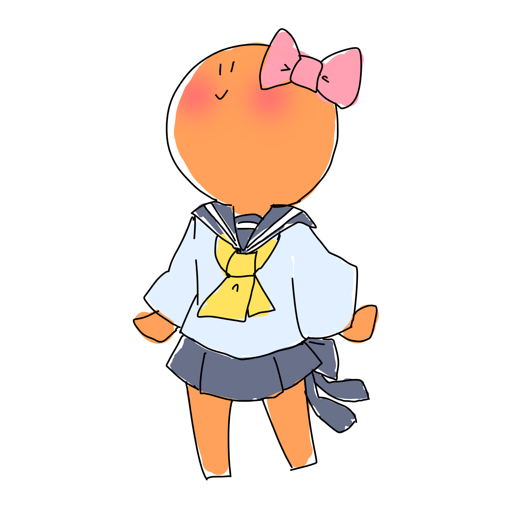

SoiFunClabへようこそ！ ここではたくさんのイラストを展示しています。

19.01.20
novel更新！
19.01.18
profile更新！
19.01.10
illust更新！
19.01.07
サイトオープン！
profile
SoiFanClabの管理人そいせーじです\(・ω・)/
夢見る乙女♥花の女子高生なの♥
いろいろかいてます♥
まじまんじ♥
かくかくした奴ら


とうもろこし

おうち
あったかハウス

クリスマスツリー
リア充は爆発すべき
桜咲く校門で私が彼に出会ったのは…
結論から言うと私は彼に恋をした。
彼は私の１つ年上の先輩で、顔良し頭良し運動神経抜群と三拍子揃ったハイパーイケメンだった。
所謂少女漫画のヒロインの恋する相手男性というのが彼を表す最も的確な肩書きだろう。そのくらい完璧な人物だった。
対する私は、平凡中の平凡。もしここが少女漫画の世界なら彼とそういった関係になれたのだろうが少女漫画でもなんでもないこの現実という世界では彼の隣に立つことすらままならないだろう存在だった。
高嶺の花であることはわかっていた。でも恋せずにはいられなかったのだ。あの頃の私はまだ今よりも捻くれても達観してもなく、恋に恋ができるような所謂正統派乙女系女子高生だった。
その頃の私は毎日帰り際に彼の教室を少しだけ覗くことを日課にしていた。ストーカーなどと思わないでほしい。ただ一目でも彼を見たいと少し覗いていただけで彼の生活パターンを把握していたりした訳ではない。断じてストーカーではない。ただの乙女心である。
彼の姿を長時間至近距離で見れる訳ではない。けれど僅かな間でも彼の姿を見れるということが当時の私にはとんでも幸せなことだったのだ。だからストーカーじゃないっていってるでしょ。
それはいつのことだっただろうか。覚えているのは恐らく彼のクラスが体育か何か移動教室系の授業で教室に誰もいなかったということだけだ。
私は彼がいないことにかなり落胆した。しかし、私は見つけてしまったのだ。
彼の使っている机の上にぽつんと取り残されたかのようにセロハンテープが置いてあるのを…
運命だと思った。この時の私が正常な思考回路を持っていたのならこんなことは思わなかっただろうが、本当に運命だと思ったのだ。そこ、頭おかしいとか言わない。恋する乙女とは通常に増して運命を感じてしまう生き物なのだから。
奇しくも彼のものだろうセロハンテープに運命を感じてしまった私は、周りに誰もいないことをいいことにそのセロハンテープをこっそりと自分のバッグにしまった。端的にいうと盗難である。しょうがない、この時の私は強く運命を感じ、他のことが考えられなかったのだ。コソ泥と言いたい気持ちはわかるが、その気持ちはそっと胸の中にしまっていてほしい。
彼のセロハンテープを手に入れた私は何かに急かされるように家に急いだ。
彼のものを無断で盗ってしまったことに少し罪悪感を抱いていたのかもしれないし、彼のものを手に入れてしまったという興奮感で胸がいっぱいだったのかもしれない。何度思い返してもあの帰路で自分が何を思っていたのか今の私でも思い出せないのだ。
家に帰った私は自室にある自分の机の真ん中にセロハンテープを置いた。胸が張り裂けそうなほどドキドキしていたことを覚えている。それに、顔はこれでもかというほどにやけていただろう。
彼のセロハンテープが自分の部屋にある。 ただそれだけのことが私には堪らなく嬉しかったのだ。思い出しただけでも恥ずかしい。若気の至りというやつだ。
結局その日はずっとセロハンテープを見つめてから就寝した。我ながら気持ち悪いやつである。
異変は次の日の朝から起きた。
本当にいきなりのことだった。
「おい、朝だぞ。起きろ。」
私はそんな男の人の声で目を覚ました。
目を覚ましてからふと疑問に思った。 我が家には男の人は父と弟の2人しかいない。私が思春期に突入してから申し訳ないが父には私の部屋への侵入を禁止していた。思春期の女子高生諸君にはわかってもらえるかもしれないが、父が自分の部屋に入ってくるのがなんか嫌だったのだ。今更ながらに思う、ごめん父。 そしてもう1人の男子である弟は、物凄くお寝坊さんである。私よりも早く起きたことなんて彼が私の弟として生まれ落ちてから一度もない。つまり、もしあったら天変地異の前触れである。
ということは、私の部屋に来て私を起こすことのできる男性はいないはずだ…
なのになぜ男性の声が…？
まあ、幻聴なのかもしれない。妄想過多で幻聴が聞こえるなんて夢見る乙女にはよくあることだろう。いや、ないか。まあいいや。
そんなこんなで、結論付けた私は布団を深く被り二度寝しようとした。
しかし…
「何してるんだ！早く起きないと学校遅れるぞ」
やっぱり男性の声が聞こえるのである。 不思議や怖いを通り越してイラついてきた私は、布団を思いっきり吹き飛ばしながら飛び起き、
「うるっさいなぁ！今起きるよ！」
と叫び声のした方を向いた。
そこには
昨日盗んできたセロハンテープが机の上に鎮座していた。
現在執筆中。
Linkという名の言い訳。
このサイトは授業の一環で作成したユーモアあふれるサイトです。
全てフィクションでできています。
予めご了承ください。
きゃぴきゃぴ女子高生はいません。